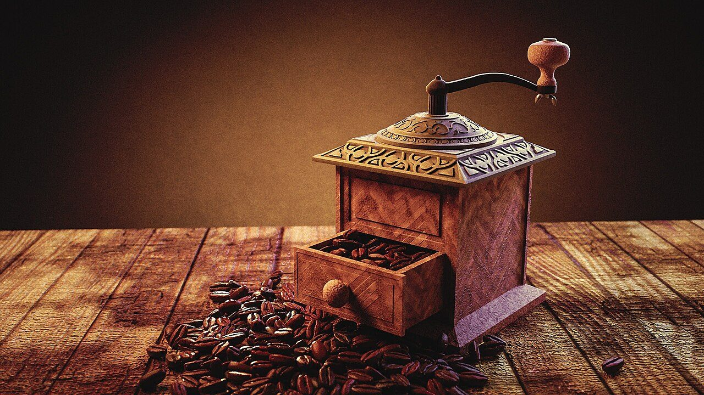

制作側の連想
コークス炉の部位を、配置図にしてみる
このサイトは、石炭を蒸し焼きにするコークス炉の断面を図にしたつもりで作りました。六つの部位に番号をふり、上の図と並べています。制作側の連想で、お店の理念・由来とは無関係です。実際の設備の構造や仕様を示すものでもありません。
凡例
六つの部位
- 1炭化室たんかしつ石炭を入れて蒸し焼きにする、細長い部屋。
- 2燃焼室ねんしょうしつ炭化室と交互に並び、外から熱を送る部屋。
- 3装炭口そうたんこう炭化室の天井にあいた、石炭を入れるための口。
- 4上昇管じょうしょうかん炭化室から出るガスを上へ導く管。
- 5押出機おしだしき蒸し焼きが終わったものを押し出す装置。
- 6蓄熱室ちくねつしつ炉の下にあり、熱をためておく格子状の部屋。
ギャラリー(イメージ)
パンとコーヒー豆の写真


写真はパンとコーヒー豆のイメージです。お店のものではなく、お店で提供している商品を示すものでもありません。
ご案内
お店のこと(確認できたものだけ)
| 所在地 | 〒763-0054 香川県丸亀市中津町７５６−５ |
|---|---|
| 電話 | 準備中 |
| 営業時間 | 準備中 |
| 定休日 | 準備中 |
| ご予約 | 準備中 |
| 駐車場 | 準備中 |
| SNS | Instagram @kissa_polaris_kagawa |